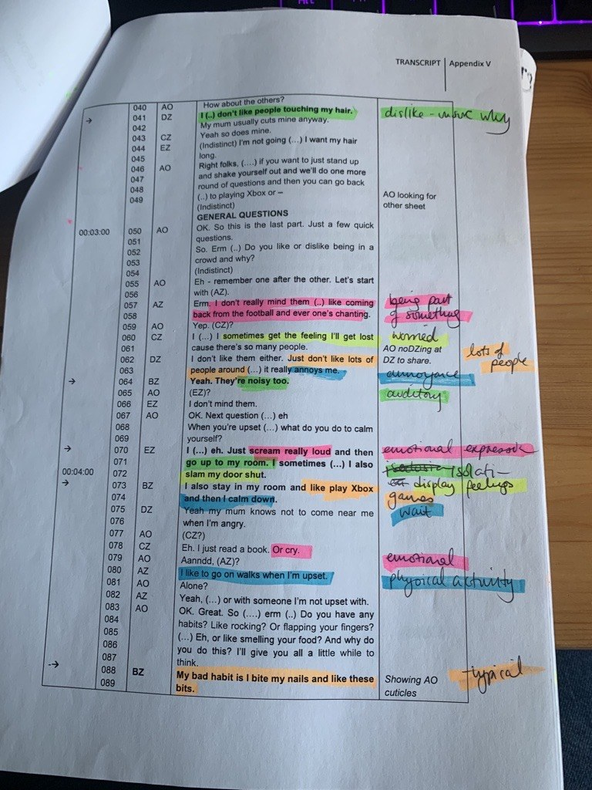
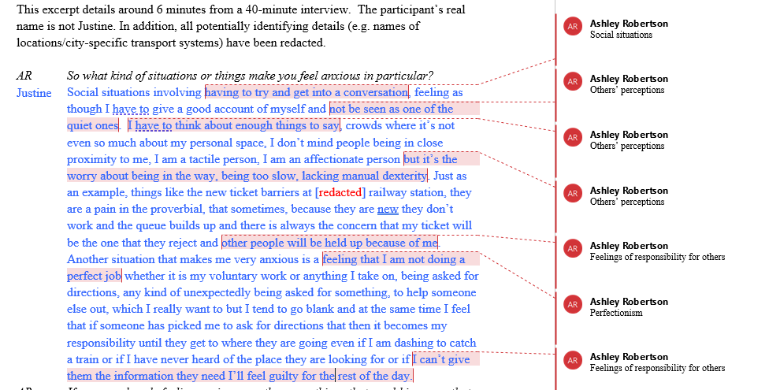

4 Data analysis
This chapter has activities to support you with Thematic Analysis. This chapter, alongside Ashley’s lectures, will talk you through the six phases required for TA; we advise using Braun & Clarke (2021) to structure your data analysis. This can be accessed through the library.
Overview of the steps of TA
- Familiarisation (p.42 in the Braun & Clarke (2021) book)
- Doing coding (p.59)
- Generating initial themes (p.78)
- Developing and Reviewing themes (p.97)
- Refining, Defining and Naming themes (p.108)
- Writing up your analysis (p.118)
Before you start: a key principle
Themes do not emerge. It is common to read that themes ‘emerged’ from the data. This suggests that themes are lying in wait for you to discover them, and that any analyst would find the same ones. This is not the case: you actively develop your themes, and your experiences, assumptions and interpretations will affect the themes you end up with. This is why reflexivity matters throughout your analysis, not just at the end (see Chapter 5).
4.1 Coding (Phases 1-2)
Here, we’ll focus on Phases 1 and 2 of the process. We also covered how to do Phases 1 and 2 of the analysis in the Thematic Analysis lecture in Semester 1.
4.1.1 Phase 1: Familiarisation (p.42)
- Transcribing (or correcting/anonymising your transcript) helps you to become more familiar with your data. You will not do this in this project, but you might during your dissertation.
- Read over the transcript, but do it in an ‘active’ way. This means reading while searching for meanings and patterns
- Note down anything of interest that comes up, either in a particular part of a transcript or thinking about the overall dataset.
4.1.2 Phase 2: Coding (p.59)
- Codes identify a feature of the data that seems interesting or relevant to your research question
- The process of coding involves going through the transcript and thinking about the data, and picking out what seems interesting/important.
- Try to apply short, specific labels to each part of the transcript as you go through it.
- Codes are specific, and each one usually captures a single idea (themes, which come later, are broader and capture a pattern of shared meaning) – you will likely end up with quite a lot of different codes.
- Code as much of the relevant data as you can at this point – not every code will make it to the next stage, but it’s good to capture as much as you can now.
4.1.3 Semantic and latent codes
When you code, you can work at different levels of meaning:
- Semantic codes capture meaning that is explicitly expressed. They stay close to the participants’ own words and the surface meaning of the data. Semantic coding still goes beyond summarising or paraphrasing.
- Latent codes capture deeper, more implicit meaning: the underlying ideas, assumptions and concepts behind what is said.
Semantic and latent are two ends of a continuum rather than a strict choice, and many analyses include both. You can see both levels in Braun & Clarke’s notes on the Andreas extract in the optional research skills session (Appendix B): their first notes stay close to what he says, and they then look ‘a bit more deeply’ at what might lie underneath.
Two related ideas are easy to mix up with semantic and latent:
- Inductive and deductive coding is about where your codes come from: the data itself (more inductive) or existing theory you bring to it (more deductive).
- The type of knowledge your study aims to produce (see Chapter 1) is also separate: a realist study can include latent codes, and a social constructionist study can include semantic ones.
4.1.4 How to actually do the coding (logistically)?
There are many different ways to approach this. We ask you to use one of two methods for your report (hand-coding or coding using Word). The reasons for this are that we need you to evidence the full process of your analysis, and this is included as part of the learning criteria for this assignment.
Option 1: Hand-coding
Option 2: Code using Word, by adding comments

However, if you do a qualitative project for your dissertation, other options will be open to you, so please do ask your supervisor what might be best!
4.1.5 Activities
4.1.5.1 Activity 1: Example of coding
Have a look at this example of coding (using Thematic Analysis) from Braun & Clarke (2013)
Think about the following:
Do you agree/disagree with the codes that the authors have chosen? Which ones, and why? Are there any additional codes that you think might be worthy of consideration?
4.1.5.2 Activity 2: Try it yourself!
It’s time to have a go at coding yourself now!
Read through this transcript, taking brief notes individually the first time you read it. What things did you pick up?
The research question for this transcript is: How do students make sense of why people get tattoos and piercings?
Identify codes for this transcript and post them on the padlet. Ashley will then give class-wide feedback on the codes to the class.
4.1.5.3 Activity 3: Semantic vs. latent
To explore differences between semantic and latent coding, as well as analysing at an illustrative or analytical level, please read Braun and Clarke (2013) p207-210 and also p252-254.
4.2 Developing themes (Phases 3-6)
Here, we’ll focus on Phases 3 to 6 of the process. We also covered how to do Phase 3 in the Thematic Analysis lectures in Semester 1. For these activities, you are welcome to do them individually or in pairs/small groups – whichever you prefer!
4.2.1 Phase 3: Generating initial themes (p.78)
In this stage, you should sort the codes into potential themes. Here, you will start to analyse your codes, and consider how they might share an idea or concept.
It might be helpful to visualise this in some way, and see how the codes fit together. You may have codes that don’t seem to fit anywhere, others will fit neatly into themes, others might be in sub-themes.
You end this step with a collection of candidate themes (and potentially sub-themes).
4.2.2 Phase 4: Developing and Reviewing themes (p.97)
In Phase 4, you check your themes to see whether they make sense a) when you look at the coded extracts for that theme and b) when you look at the whole dataset.
Checking the coded extracts
Reviewing at the level of the coded extracts. Read all the collated extracts for a theme…do they form a coherent pattern? Do they tell an important story about shared meaning? Are you sure they are themes rather than topic summaries?
If they seem like themes and the coded extracts fit well underneath them, then move on to checking the themes against the dataset.
If they don’t, is it the case that a) the theme itself is problematic and needs to be reworked or b) the theme is fine, but some of the data doesn’t fit?
Checking themes against the whole dataset
Look across the entire dataset and consider your theme(s) – do they accurately reflect the meanings in the dataset? Do they tell you about the important patterns that you observed in the dataset?
4.2.3 Phase 5: Refining, Defining and Naming Themes (p.108)
- During this phase, you should define and refine the themes.
- Define and refine = identifying what this theme is about, what aspect of the data is captured by each theme?
- For each theme, you need to conduct and write a detailed analysis
- Do your themes explain different things without overlapping too much?
- Try to choose names for themes that are not one word or likely to indicate topic summaries (see the Semester 1 Thematic Analysis Lectures if you want to revisit this)
4.2.4 Phase 6: Writing up your Analysis (p.118)
For the RM2 qualitative report, you should report either two themes (no sub-themes) or one theme with 2-3 sub-themes. This is to allow you to balance depth and breadth. For guidance on writing up, see Developing a narrative below.
4.2.5 Activities
4.2.5.1 Activity 1: Try it yourself!
Use the same transcript as for Phases 1-2 – it is linked here. You can use the codes you developed in the coding activity, or you can recode the data again if you prefer – either option is fine.
- Once you have your codes, try to organise them into themes.
- Group together the codes that seem similar in some way – can you think of an overarching ‘theme’ that describes them?
- Are there any codes that don’t ‘fit’ anywhere? (that’s okay if so!)
- Can you identify any quotes that you would use to evidence the themes? Do these definitely match well onto the theme?
4.2.5.2 Activity 2: Bad analysis (OPTIONAL)
This is an additional activity and only if you have time/want to explore a bit further. Have a look at the analysis. This is an example from Braun & Clarke’s book. Why do you think it might be considered a poor example of thematic analysis?
After you’ve finished, you can look at the points that Braun & Clarke identified. Did you identify any additional ones? Were there any you missed?
4.3 Developing a narrative
When doing your thematic analysis, it is important to develop a narrative and go beyond paraphrasing/summarising your data.
Thematic Analysis requires an active approach from an analyst. It is your role to make sense of the data and to present this in a coherent, understandable and accessible way to the reader. You will take these ‘patterns of meaning’ and make sense of/interpret them, and convey these to the reader. Remember that themes do not emerge (see the start of this chapter): the narrative is something you build, and it reflects your interpretation of the data.
When you present your data in the analysis section, you will have a) your list of themes and b) your quotes. It is your job to combine these with analytical commentary, in order to tell the story of your data. It’s not enough to present the themes and then back these up with quotes – your job is to add in a narrative that brings the themes and the evidence (i.e. quotes) together.
Things to be aware of in developing a narrative
- Remember to introduce your theme to the reader – what is it about? Don’t start a theme with a quote. If you have sub-themes, still introduce the overall theme briefly before you discuss your first sub-theme
- Explain to the reader why you’ve chosen to include each quote. Why is it important enough to be included? What does it tell us about your data? Each quote should clearly illustrate the theme. Try to include at least one or two ‘longer’ quotes for each theme, which allow you to explore it in depth, and supplement these with shorter quotes.
- Focus on depth rather than breadth – it is important that we get a real sense of your theme. In the RM2 report you only have 3000 words in total, and so will have to choose what you discuss
- Show the reader who each quote comes from – we should be able to match this up with the demographics table/list of interviews in the Methods section (which then gives us some context). You can do this by using pseudonyms and linking this to the table by using the same names there too.
- Think about where the opportunities are in your data to go beyond description. Is there anything you can infer? If so, remember to be clear with the reader that this is your interpretation. Your reader should be able to see why you have interpreted the data this way from the quotes you’ve chosen.
4.3.1 Activities
4.3.1.1 Activity 1: Analysing vs. summarising
Read pages 8-12 from this thematic analysis on skin-picking. Here, the authors report three themes and then have a reflection at the bottom. Try to identify where the authors have gone beyond paraphrasing – discuss in your groups/pairs if you can.
4.3.1.2 Activity 2: Evaluating analysis and discussion sections
Do this exercise on evaluating analysis sections of published papers.
If you are planning a qualitative dissertation, the optional research skills session in Appendix B goes into reflexivity, familiarisation and common problems with thematic analysis in more depth.